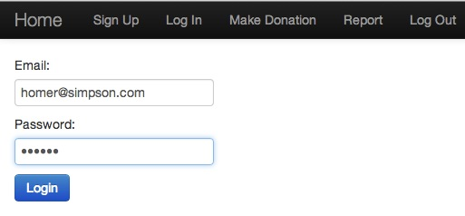

Prototype
Develop a dynamic web application called donation that will allow a user to register, log in and log out, make donations and print a report of all donations.
Introduction
Design and implement a dynamic web application called donation in accordance with the brief that follows in a series of screen shots.
- Use the Play application to build a prototype of the application.
- You should develop the application in 5 iterations tagged as v0, v1, v2, v3 and v4.
- An iteration comprises a completed part of the application.
- Each successive iteration builds on the previous one.
- When you have completed the iteration it should run to completion without error and at this point you should add, commit and tag the iteration in your git repository.
- Launch donation using the play run command within the application folder and open the application from within a browser.
- Where the iteration uses a model you should inspect the model and its various tables (localhost:9000/@db).
Although you will use the git application to store your work in a repository, you are recommended to independently archive each iteration until you are sufficiently confident in using git.
Solutions will be provided for each iteration.
A sample completed application may be viewed live here.
A description on how to debug into a Play app within Eclipse is available here.
Use git to create a history of the application by creating a local repository named donation and committing and tagging each of the iterations v0 to v4 inclusive. Here is example code applicable to the first iteration.
git add .
git commit -m 'iteration v0'
git tag -a v0 -m 'v0'
git push && git push --tagsIteration v0
Develop the sign up and sign in facilities.
Introduce a model named User:
A user should be capable of signing up (registering) and signing in. It should be possible to open the database and verify that the user is recorded in User.
Model | View | Controller
Views
- Welcome
- Sign up
- Sign in
- Sign out
Controller
- Accounts
Model
- User
Information relevant to this iteration is available here (How to Make an Application out of a Web Page by E.de Leastar).
Completed Iteration
Sign Up page
Sign in page

Iteration v1
- Introduce placeholder Donation Request page.
- Use Bootstrap.java to pre-load sample user data.
Model | View | Controller
Views
- Welcome
- Sign up
- Sign in
- Donation
- Sign out
Model
- User
Completed Iteration
Here are the screen shots for this iteration.
Welcome page
Sign Up page
Sign in page
Donate Page
Iteration v2
Introduce a model named Donation:
Set up a one to many relationship between User and Donation respectively.
Model | View | Controller
Views
- Welcome
- Sign up
- Sign in
- Donation
- Sign out
Views
- Welcome
- Sign up
- Sign in
- Donation
- Sign out
Model
- User
- Donation
Completed Iteration
Here are the screen shots for this iteration.
Welcome page
Sign Up page
Sign in page
Donate Page
HTML Controls
These are examples of the use of controls used in the application based on material in W3Schools.
Checkbox
Radio buttons
Drop down list
Here is sample code from W3Schools that you could modify to suit this application.
<form action="">
<select name="cars">
<option value="volvo">Volvo</option>
<option value="saab">Saab</option>
<option value="fiat" selected>Fiat</option>
<option value="audi">Audi</option>
</select>
</form>A better choice, perhaps, would be to use Semantic UI controls.
Here is Semantic UI dropdown sample code:
<div class="ui dropdown">
<div class="text">Select</div>
<i class="dropdown icon"></i>
<div class="menu">
<div class="item" data-value="option1">Option 1</div>
<div class="item" data-value="option2">Option 2</div>
</div>
</div>Iteration v3
Introduce a progress bar in the Donation template which illustrates the proportion of the donation target achieved to date.
Update the progress bar immediately following the making of a new donation.
Create a method in the DonationController that will query the Donation model for a list of donations, calculate the percentage this constitutes of the donation target and render this percentage to the progress bar.
The donation target may be an arbitray hard-coded number, say $20,000.
Model | View | Controller
Views
- Welcome
- Sign up
- Sign in
- Donation
- Sign out
Controller
- Welcome
- Accounts
- DonationController
Model
- User
- Donation
Completed Iteration
Here are the screen shots for this iteration.
Welcome page
Sign Up page
Sign in page
Donate Page
Progress bar
The progress bar provides a visual feedback to each client of the total amount currently donated expressed as a percentage of the target amount. One method of implementing the progress bar is to use Semantic UI, information on which is available here
Here is a code snippet which shows the control syntax with a fixed value for the progress (20%).
<div class="ui successful progress">
<div class="bar" style="width:20%"></div>
</div>We, however, require that the progress bar be updated dynamically by pushing the appropriate value from the server after each contribution. In the code snippet that follows this dynamic value is transported in the variable progressPercent.
<div class="ui successful progress">
<div class="bar" style="width:${progress}"></div>
</div>Your task is to calculate the value of progressPercent following each donation and render this value in the progress bar in the view template.
Note that when you have calculated the percentage figure (in a controller) you should then append the percent sign (%) to comply with the formatting requirements of the Semantic UI progress bar.
Iteration v4
Introduce a report template.
Output the table of donations and corresponding donors when the report template page is accessed.
Model | View | Controller
Views
- Welcome
- Sign up
- Sign in
- Donation
- Report
- Sign out
Controller
- Welcome
- Accounts
- DonationController
Model
- User
- Donation
Completed iteration
Here are the screen shots for this iteration (which represents the completed prototype).
Welcome page
Sign Up page
Sign in page
Donate Page

Report Page
You may view a live version of this, the final project, here, hosted on Heroku.
Semantic Dropdown
Figure 1 illustrates the relationships between the various components associated with a Semantic UI dropdown.
The script that contains the JavaScript code to activate the dropdown is placed in an external file named donate.js.
Validation could be added to the same file. For example, you might wish that a dropdown selection had been made before the Donate button responded on being pressed. This will be addressed in a later lab.
Note the close coupling between the controller and the dropdown by studying the parameters of the method donate.
Invoking the JavaScript method dropdown() is necessary to acivate the dropdown box.